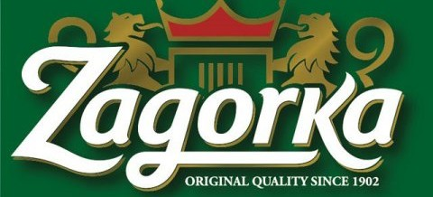

Zagorka
Zagorka는 불가리아의 도시 스타라자고라에서 유래한 불가리아 맥주 브랜드이다. Zagorka Brewery에서 양조하며, 1902년에 설립된 회사에서 출발했다.
최종 업데이트

Zagorka는 어떤 브랜드인가
Zagorka는 불가리아 스타라자고라에 본사를 둔 불가리아 맥주 브랜드이며, Zagorka Brewery에서 양조한다. 회사는 1902년 체코 전통을 따라 프라하에서 돌아온 의사가 세웠다.
현재의 양조장은 1958년에 문을 열었고, 1994년부터 Heineken이 소유하고 있다. 회사는 Zagorka, Ariana, Stolichno 세 가지 불가리아 브랜드와 Heineken, Birra Moretti, Amstel, Desperados 네 가지 라이선스 브랜드를 생산한다.
Zagorka 브랜드에는 라거인 Zagorka Special과 수제 맥주 두 종류가 있다. 라벨은 처음에는 키릴 문자로 쓰였으나 현재는 주로 라틴 문자로 쓰인다.
Zagorka는 어떻게 시작되고 성장했나
회사는 1902년에 체코 전통을 따라 설립되었으며, 설립자는 프라하에서 돌아온 의사였다. 현재의 양조장은 1958년에 문을 열었고 본사는 스타라자고라에 있다.
1994년부터는 Heineken이 이 회사를 소유하고 있다. 과거에는 Zagorka Light(Загорка Светло)와 Zagorka Gold 등 여러 변형이 있었으며, 이 둘은 2000년대 초반까지 존재했다.
라벨은 처음에는 키릴 문자로 쓰였고, 1990년대 후반에는 Light는 키릴 문자, Special은 라틴 문자 라벨을 쓰는 겹치는 시기가 있었으며 현재는 주로 라틴 문자로 쓰인다.
Zagorka의 브랜드 아이덴티티는 무엇인가
스타라자고라에서 1902년 체코 전통에 따라 시작된 불가리아 맥주 브랜드로, 1994년부터 Heineken이 소유한 회사에서 만들어진다.
Zagorka의 대표 제품과 서비스는 무엇인가
이 회사는 불가리아 브랜드 Zagorka, Ariana, Stolichno 세 가지와 라이선스 브랜드 Heineken, Birra Moretti, Amstel, Desperados 네 가지를 생산한다. Zagorka 브랜드에는 Zagorka Special(라거, 알코올 도수 5%)과 수제 맥주 두 종류가 있다.
수제 맥주 중 Zagorka Reserve는 베리류로 향을 낸 흑맥주이며 알코올 도수 6%로 2011년부터 나왔다. Zagorka Fusion은 포도로 향을 낸 라이트 맥주이며 알코올 도수 2%로 2012년부터 나왔다.
과거에는 Zagorka Light와 Zagorka Gold도 있었다.
Zagorka는 지금 어떤 상태인가
현재의 양조장은 1958년에 문을 열었으며, 1994년부터 Heineken이 이 회사를 소유하고 있다. 회사는 불가리아 브랜드 세 가지와 라이선스 브랜드 네 가지를 생산한다.
Zagorka 브랜드는 Special, Reserve, Fusion 세 가지 변형으로 구성되며, Reserve는 2011년, Fusion은 2012년부터 나왔다. 라벨은 현재 주로 라틴 문자로 쓰인다.
Zagorka 로고는 어떻게 변해왔나
자주 묻는 질문
Zagorka는 언제 설립되었나요?
Zagorka는 1902년 설립되었습니다.
Zagorka는 어떤 산업의 브랜드인가요?
Zagorka는 식음료 분야의 브랜드입니다.
Zagorka의 브랜드 아이덴티티는 무엇인가요?
스타라자고라에서 1902년 체코 전통에 따라 시작된 불가리아 맥주 브랜드로, 1994년부터 Heineken이 소유한 회사에서 만들어진다.
Zagorka의 대표 제품은 무엇인가요?
이 회사는 불가리아 브랜드 Zagorka, Ariana, Stolichno 세 가지와 라이선스 브랜드 Heineken, Birra Moretti, Amstel, Desperados 네 가지를 생산한다.
Zagorka는 어느 기업이 소유하고 있나요?
현재의 양조장은 1958년에 문을 열었으며, 1994년부터 Heineken이 이 회사를 소유하고 있다.
Zagorka의 본사는 어디에 있나요?
Zagorka의 본사는 스타라자고라에 있습니다(위키데이터 기준).
Zagorka의 공식 웹사이트는 어디인가요?
Zagorka의 공식 웹사이트는 http://www.zagorka.bg/ 입니다.
출처와 검증
Zagorka 관련 참고: 공식 웹사이트 · 위키데이터 Q2354423 · 영어 위키백과. 브랜드명은 한글과 원어를 함께 표기하되 데이터에 없는 표기는 만들지 않습니다. 기원 국가·설립연도는 검수된 정의문에서 확인된 값을 우선하고, 없을 때만 공식 웹사이트 URL이 일치하는 위키데이터 개체의 값을 씁니다. 웹 첫 보관은 인터넷 아카이브가 공식 사이트 첫 화면을 처음 보관한 날로, 사이트 개설일과 다를 수 있습니다. 위키데이터 값은 2026-11-08 기준입니다.